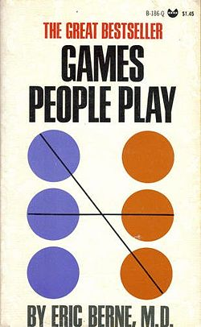

Games People Play: The Psychology of Human Relationships
is a bestselling 1964 book by psychiatrist Eric Berne. Since its publication it has sold more than five million copies. The book describes both functional and dysfunctional social interactions.
In the first half of the book, Berne introduces transactional analysis as a way of interpreting social interactions. He describes three roles or ego states, known as the Parent, the Adult, and the Child, and postulates that many negative behaviors can be traced to switching or confusion of these roles. He discusses procedures, rituals, and pastimes in social behavior, in light of this method of analysis. For example, a boss who talks to his staff as a controlling 'parent' will often engender self-abased obedience, tantrums, or other childlike responses from his employees. The second half of the book catalogues a series of "mind games" in which people interact through a patterned and predictable series of "transactions" which are superficially plausible (that is, they may appear normal to bystanders or even to the people involved), but which actually conceal motivations, include private significance to the parties involved, and lead to a well-defined predictable outcome, usually counterproductive. The book uses casual, often humorous phrases such as "See What You Made Me Do," "Why Don't You — Yes But," and "Ain't It Awful" as a way of briefly describing each game. In reality, the "winner" of a mind game is the person that returns to the Adult ego-state first. One example of these games is the one named "Now I've Got You, You Son of a Bitch," in which A is dealing with B, and A discovers B has made a minor mistake, and holds up a much larger and more serious issue until the mistake is fixed, basically holding the entire issue hostage to the minor mistake. The example is where a plumber makes a mistake on a $300 job by underestimating the price of a $3 part as $1. The customer won't pay the entire $300 unless and until the plumber absorbs the $2 error instead of just paying the bill of $300. Not all interactions or transactions are part of a game. Specifically, if both parties in a one-on-one conversation remain in an Adult-to-Adult ego-state, it is unlikely that a game is being played.